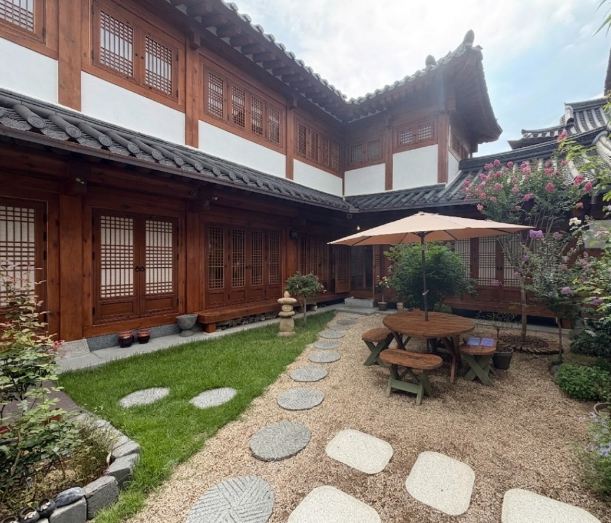

서울시, '2026 우수 서울스테이' 18곳 선정…업체당 최대 500만원 지원
800곳 중 민박업 10·한옥체험업 8곳, 안전 강화 심사 거쳐 선정

[시사포커스 / 김재록 기자] 서울시와 서울관광재단은 외국인을 대상으로 하는 민박업·한옥체험업 800여 곳 가운데 18곳을 '2026 우수 서울스테이'로 선정했다고 7일 밝혔다. 이번 공모에는 총 48곳의 서울스테이가 지원해 서류 심사와 현장 평가를 거쳐 민박업 10곳, 한옥체험업 8곳이 최종 선정됐다. 서울스테이는 외국인을 대상으로 하는 민박업 또는 한옥체험업의 등록 활성화와 역량 강화를 지원하는 사업으로, 서울의 독특한 숙박 문화를 세계에 알리는 핵심 창구 역할을 해왔다.
올해 평가에서는 안전과 주민 상생을 고려한 지속 가능한 숙소 발굴에 초점을 맞춰 안전·소방 평가 비중을 대폭 늘리고 현장 평가에 안전 전문가를 직접 참여시켰다. 조성호 서울시 관광체육국장은 "서울만의 개성과 안전성을 갖춘 우수 숙박시설을 지속해서 발굴하고 지원해 세계인이 머물고 싶은 서울을 만들어 나가겠다"고 밝혔다.
선정된 업체는 인테리어 개선과 안전시설 보강에 활용할 수 있는 최대 500만 원의 사업비를 지원받는다. 아울러 서울시와 서울관광재단의 관광마케팅사업에도 참여할 수 있는 기회가 주어진다. 서울관광재단 측은 안전 기준 강화와 함께 지역 주민과의 상생을 반영한 숙소를 우선 발굴함으로써 서울 방문 외국인의 숙박 만족도를 높이고 지속 가능한 관광 생태계를 구축해 나간다는 방침이다.
📌 출처: 서울특별시 보도자료